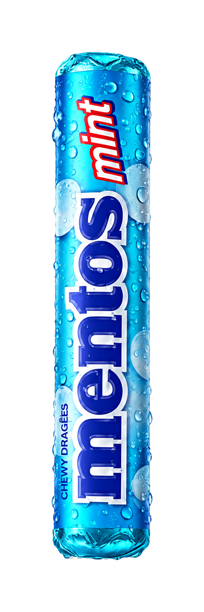
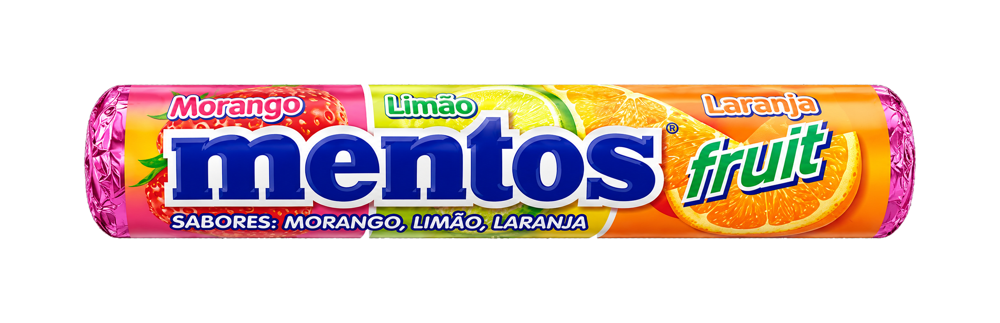
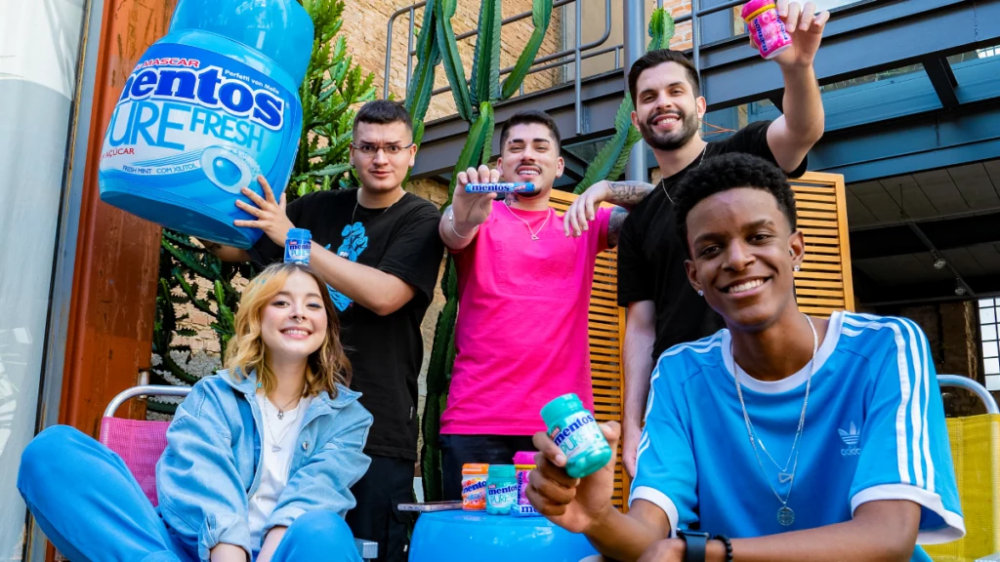
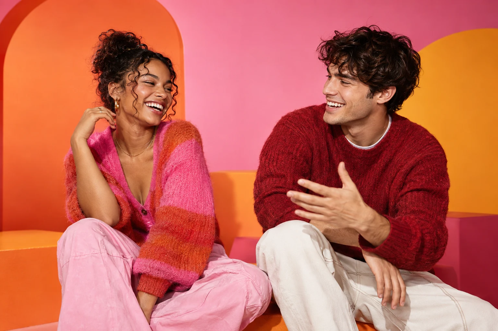
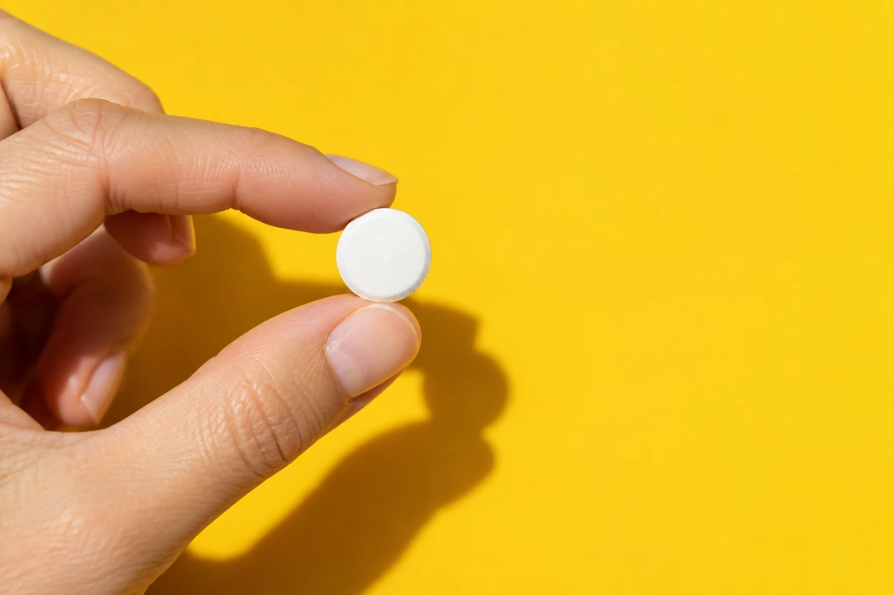
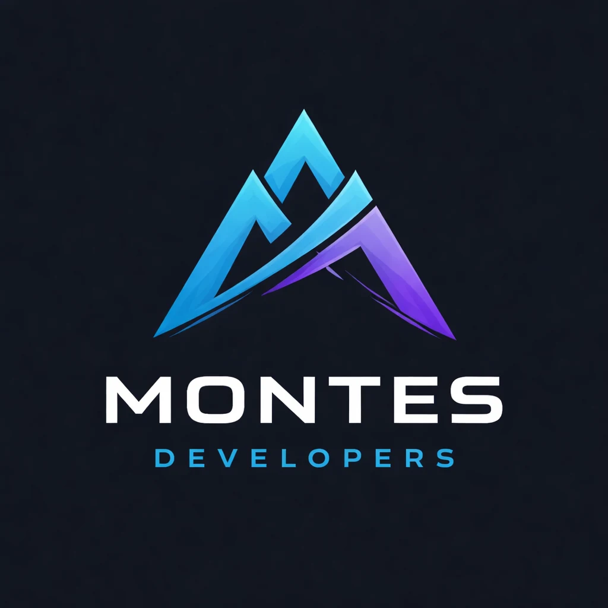

01 / 04
Abriu.
Um gesto.
Uma mudança de ritmo.
Uma experiência conceitual Mentos
Role para mudar o momento
01 / 04
Um gesto.
Uma mudança de ritmo.
02 / 04
Cor, sabor e uma nova energia para o momento.
03 / 04
Cada sabor entra com uma personalidade diferente.
04 / 04
Mint, Fruit ou Rainbow.
O momento muda. Você escolhe como.
Sabores / três atmosferas
Do frescor clássico às combinações mais coloridas, cada versão muda a energia da experiência.
Frescor que deixa o momento mais leve.
Visual limpo, tons gelados e a versão mais clássica da experiência Mentos.

Mais cor para entrar no ritmo.
Uma combinação visual vibrante para uma experiência leve, divertida e cheia de personalidade.

Quando uma cor não é suficiente.
Uma composição feita para quem prefere o momento com mais possibilidades.
Um gesto reconhecível
Cabe no bolso.
Entra na conversa.
Muda o momento.
A identidade Mentos encontra força em uma ideia simples: transformar algo pequeno em um gesto marcante.
Momentos / atitude
Não precisa de uma ocasião especial.
Às vezes, basta um detalhe.



Manifesto
Ele simplesmente entra,
muda a energia
e segue o momento.
Estudo de experiência digital
Um exercício de direção criativa, desenvolvimento e motion design construído para transformar uma marca reconhecível em uma experiência digital imersiva.
Experiência visual orientada pelo produto.
Scroll, tipografia e composição trabalhando juntos.
HTML, CSS, JavaScript e motion em uma experiência responsiva.
Motion / continuidade
Cada transição foi pensada para manter o produto em cena e criar continuidade entre os capítulos da experiência.
Última cena
E tudo começou com um pequeno detalhe.

Case conceitual
Ideias ganham forma quando design, tecnologia e movimento trabalham juntos.
Este é um projeto conceitual criado para explorar como uma marca reconhecível pode se transformar em uma experiência digital memorável.
Direção criativa, interface e desenvolvimento:
Montes.
Projeto conceitual e independente, desenvolvido para fins de portfólio e experimentação criativa. Mentos e seus elementos de marca pertencem aos seus respectivos titulares.